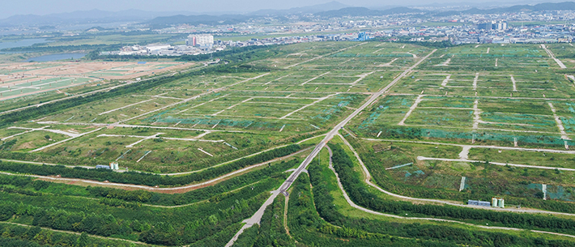

제2매립장


지난 2018년 매립을 종료한 곳으로 매립 복토면, 침출수, 매립가스, 이격구간 관리 등 철저한 사후관리를 통해 주변 지역의 환경오염을 최소화했습니다. 현재 매립이 끝난 제2매립장 활용 방안을 논의 중이며 공원시설, 체육시설, 문화시설, 신·재생에너지 설비 등 다양한 가능성을 열어두고 있습니다.
부지면적 : 378만 m2
매립면적 : 262만 m2
매립기간 : 2000. 10 ~ 2018. 10
매립용량 : 8,018만 ton